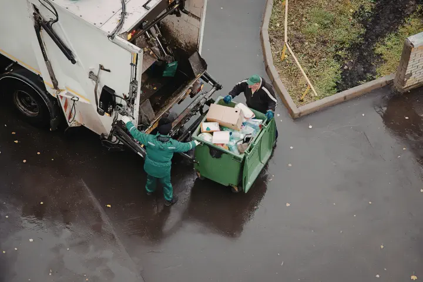

Gestión de residuos industriales · Paraguay
Gestión final de residuos con tecnología, trazabilidad y valorización.
Gestión final de residuos complejos con tecnología RMO®, evaluación técnica, trazabilidad y valorización para empresas que necesitan mayor control y respaldo sobre el destino de sus residuos.
Empresas que gestionan sus residuos con Enerpy


El problema
La gestión de un residuo no termina cuando sale de su empresa.
Una gestión responsable también implica conocer cómo será tratado, cuál será su destino y qué documentación respalda el proceso. Cuando esa trazabilidad no existe, aumentan la incertidumbre y los riesgos ambientales, operativos y reputacionales para la organización.
-
Destino
Saber qué ocurre finalmente con el residuo.
-
Trazabilidad
Poder seguir y documentar su gestión.
-
Control
Reducir la incertidumbre sobre el tratamiento realizado.
-
Respaldo
Contar con evidencia documental del proceso.
Cómo trabaja Enerpy
Un recorrido técnico, de principio a destino final.



Soluciones
Una solución integral para residuos complejos.
Enerpy Ambiental contempla evaluación técnica, tratamiento mediante tecnología RMO®, trazabilidad documental y valorización cuando sea técnicamente aplicable. Cada residuo está sujeto a evaluación previa según su tipo, composición, volumen y condiciones de gestión.
-
Diagnóstico técnico
Evaluación del residuo según origen, composición, características y volumen, como punto de partida de toda gestión.
-
Gestión final especializada
Gestión del residuo hasta su destino final, con criterio técnico y responsabilidad ambiental.
-
Tratamiento con tecnología RMO®
Tratamiento de residuos compatibles mediante el Reactor de Materia Orgánica, permitiendo su reconversión.
-
Trazabilidad documental
Respaldo documental sobre el tratamiento y destino del residuo, útil para el control interno y procesos de auditoría o fiscalización.
-
Valorización
Recuperación de materiales y materias primas con potencial de aprovechamiento, cuando corresponda.
Tecnología
RMO® — Reactor de Materia Orgánica
Es la tecnología utilizada por Enerpy para el tratamiento de residuos compatibles, permitiendo su reconversión y potencial valorización bajo un enfoque técnico y de economía circular.
- Por qué es diferente
- Se enmarca en la química sostenible y la química ambiental, orientada a reducir la dependencia de materias primas de origen fósil.
- Origen y desarrollo
- Tecnología propia registrada, originada en Paraguay y posteriormente desarrollada también en Europa.
- Resultados posibles
- Reconversión del residuo y recuperación de materiales o materias primas secundarias con potencial de aprovechamiento.
Los resultados dependen del tipo, composición y volumen de cada residuo, y están siempre sujetos a una evaluación técnica previa.
Residuos
Residuos sujetos a evaluación.
Enerpy evalúa distintos tipos de residuos industriales, peligrosos y especiales. Cada caso requiere una evaluación técnica previa para determinar la alternativa de gestión adecuada.
-
RAEE
Residuos de aparatos eléctricos y electrónicos: impresoras, toners y cartuchos.
-
NFU
Neumáticos fuera de uso, retirados del servicio y sin posibilidad de reutilización.
-
Aceites usados
Aceites lubricantes e industriales que ya cumplieron su vida útil.
-
Tintas y pinturas
Remanentes y residuos de procesos de impresión, recubrimiento y pintado.
-
Envases contaminados
Envases que estuvieron en contacto con sustancias peligrosas o químicas.
-
Agroindustriales
Residuos generados en procesos de producción y transformación agroindustrial.
-
Otros residuos especiales
Otros residuos sujetos a análisis, evaluados caso por caso según sus características.
-
¿Su residuo no está en la lista?
La admisión depende de las características de cada residuo y de la evaluación técnica correspondiente.
Consultar su caso
Beneficios
Qué gana su empresa.
- 01
Mayor control sobre la gestión de residuos
- 02
Trazabilidad del proceso
- 03
Respaldo documental
- 04
Reducción de incertidumbre ambiental y operativa
- 05
Potencial de valorización del residuo
- 06
Aporte a estrategias de economía circular
Sobre Enerpy
Tecnología ambiental paraguaya.
Enerpy Ambiental S.A. es una empresa paraguaya de tecnología ambiental que aplica la tecnología RMO® para la gestión y transformación de residuos. Esta tecnología, originada en Paraguay y posteriormente desarrollada también en Europa, busca recuperar materiales y materias primas aprovechables a partir de residuos, contribuyendo a modelos de economía circular y gestión ambiental responsable.
- UbicaciónCapiatá, Departamento Central
- CoberturaParaguay
- GrupoEnerpy S.A.C.I. · Enerpy B.V. · Enerpy Holland B.V.
Preguntas frecuentes
Dudas habituales sobre la gestión de residuos.
¿Qué tipo de residuos puede gestionar Enerpy Ambiental?
Enerpy evalúa residuos como RAEE, neumáticos fuera de uso, aceites usados, tintas y pinturas, envases contaminados y residuos agroindustriales. Cada caso requiere una evaluación técnica previa para determinar la alternativa de gestión adecuada.
¿Cómo comienza el proceso de gestión de residuos?
El proceso inicia con un diagnóstico técnico del residuo, considerando su origen, composición, características y volumen. A partir de esta evaluación se define la alternativa de tratamiento y gestión correspondiente.
¿Qué es la tecnología RMO®?
El RMO® —Reactor de Materia Orgánica— es la tecnología utilizada por Enerpy para el tratamiento de residuos compatibles, permitiendo su reconversión y potencial valorización bajo un enfoque técnico y de economía circular.
¿Qué respaldo recibe la empresa sobre la gestión realizada?
Enerpy incorpora trazabilidad documental durante el proceso de gestión, generando respaldo sobre el tratamiento y destino del residuo, lo que puede contribuir al control interno y a procesos de auditoría o fiscalización.
¿Todos los residuos pueden ser tratados por Enerpy?
No. Cada residuo debe ser evaluado previamente para determinar su compatibilidad, condiciones de tratamiento y alcance de gestión. La admisión depende de sus características y de la evaluación técnica correspondiente.
Ubicación
Capiatá, Departamento Central, Paraguay.
Enerpy Ambiental ofrece soluciones de gestión final de residuos para empresas en todo el Paraguay.
Ver en Google Maps- WhatsApp +595 985 121470
- Email comercial@enerpyambiental.com.py
- Redes

¿Necesita evaluar la gestión final de un residuo?
Cada residuo se evalúa según su tipo, composición, volumen y condiciones de gestión. El primer paso es una evaluación técnica.